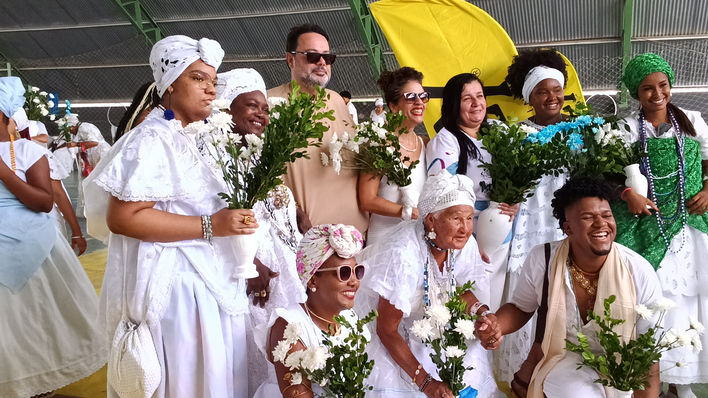
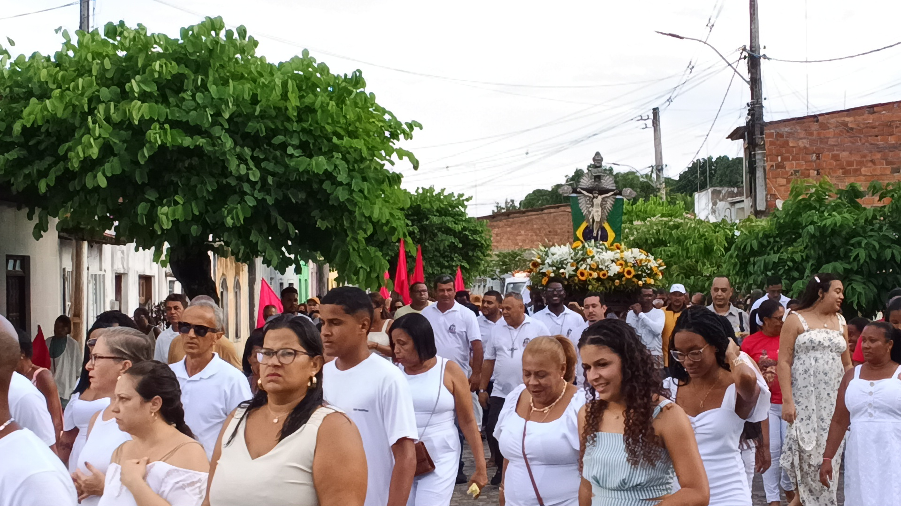
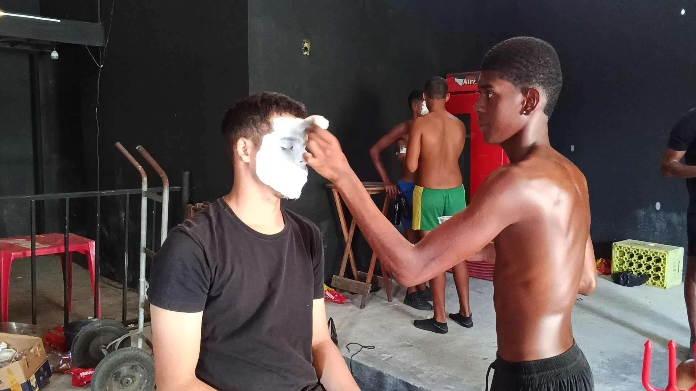
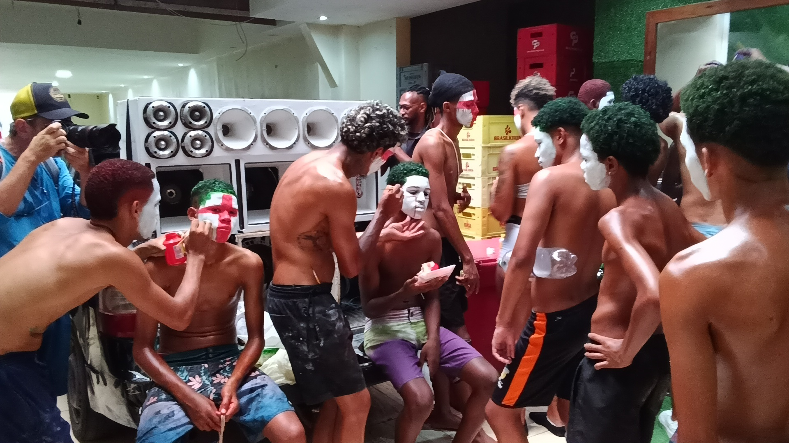
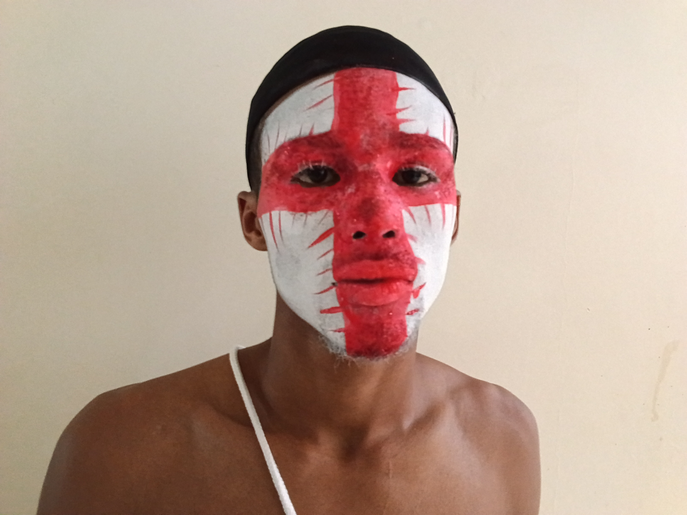
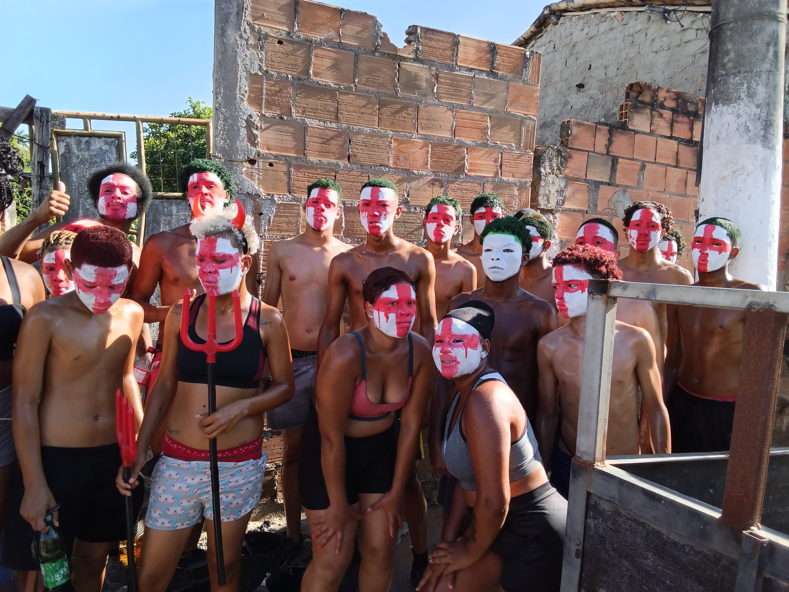
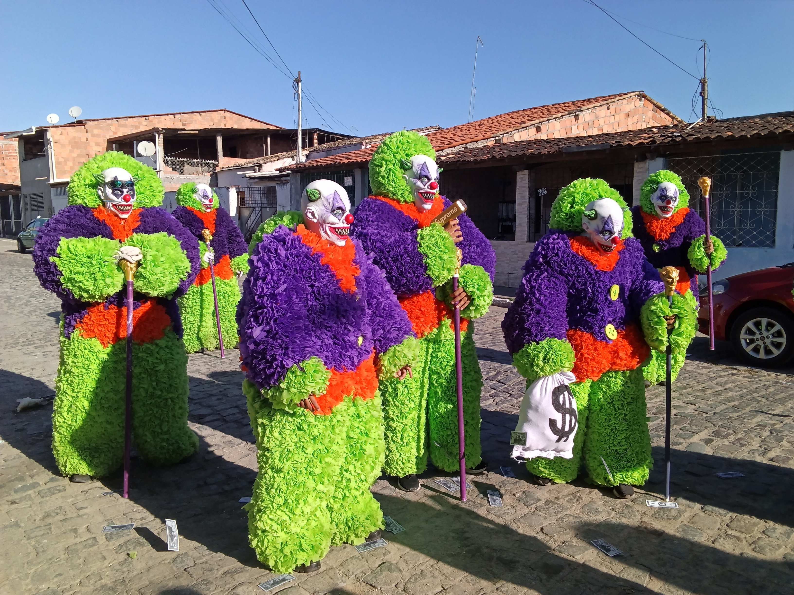
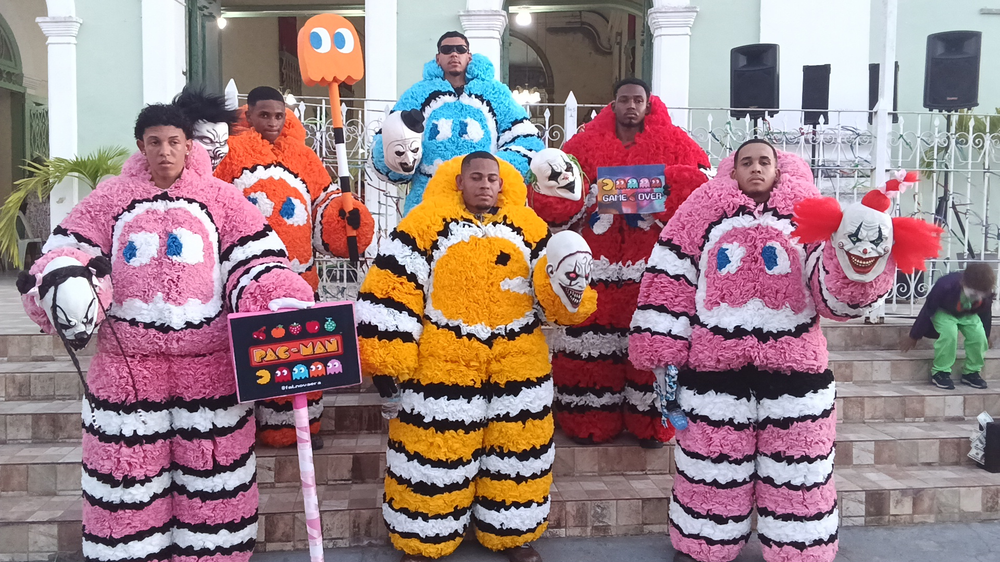
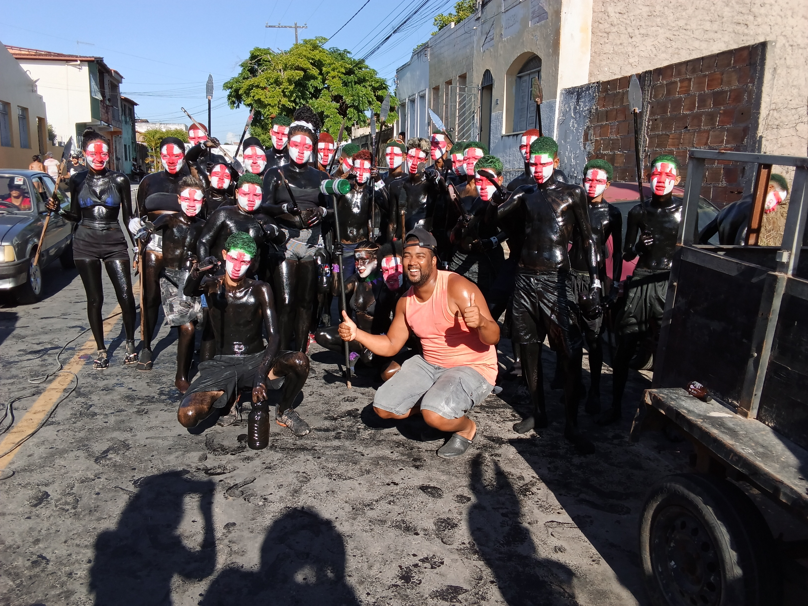
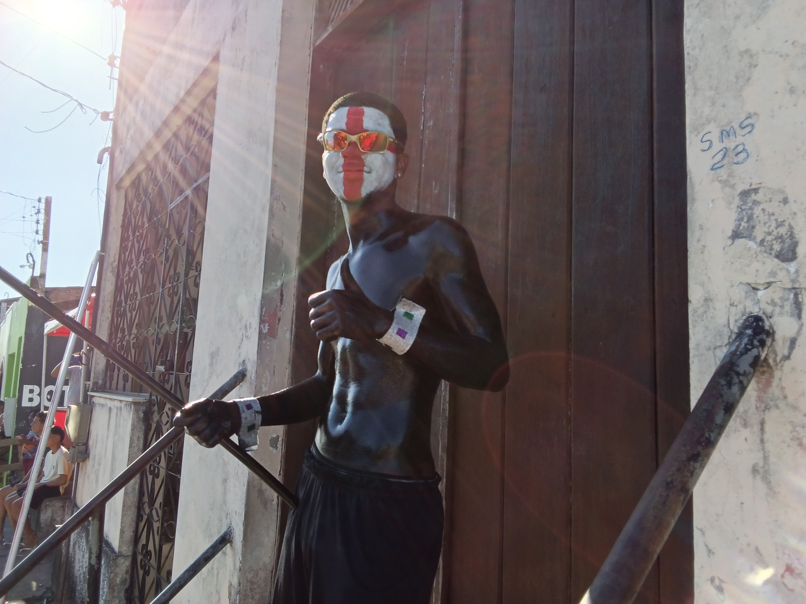

PERCURSO 01
Devoção e cortejo
Registros da dimensão religiosa e coletiva da festa, reunindo cenas de devoção e do cortejo.
As fotografias são tratadas aqui como fontes para percorrer diferentes experiências da festa. A seleção inicial registra devoção, preparação, caracterizações, encontros e ocupação das ruas. Os nomes e sentidos das manifestações ainda serão documentados pela pesquisa.


Registros da dimensão religiosa e coletiva da festa, reunindo cenas de devoção e do cortejo.




A festa também acontece antes do cortejo. A sequência acompanha momentos de preparação, pintura e caracterização dos participantes.


Cores, roupas, pinturas e adereços abrem perguntas sobre modos de fazer, transmissão de saberes e formas de participação na festa.


Ruas, fachadas e caminhos também fazem parte da experiência festiva e permitem investigar como o Bonfim se relaciona com os espaços de Muritiba.
Este retrato integra uma sequência que registra a preparação de um participante em fevereiro de 2026. Em vez de atribuir significados que ainda não foram documentados, a fotografia orienta a próxima etapa da pesquisa.